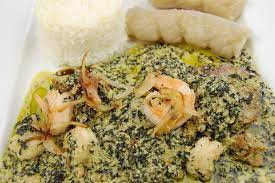

N'DOLE

Description
Le n'dole est mets typiquement africain que l'on retrouve en pays d'Afriques centrale precisement au Cameroun
Les camer rafolle de ce plat et aussi les autres pays freres aussi.
les ingredients pour realiser ce plat delicieux sont :
- 3 boules de Ndolé
- 2 oignons, coupés
- 2 cuillèresà soupe d'écrevisses séchées
- 2 oignons, hachés
- 1 cube de bouillon (Maggi), facultatif
- 2 gousses d'ail, hachées
- 200ml d'huile (d'arachide, tournesol ou de palme)
- sel, poivre et piment, selon votre goût
- 5 Litre d'eau
Etapes de preparation
- Le Lavage des feuilles de Ndolé
Faites bouillir les feuilles dans une grande marmite remplie d'eau avec un peu de sel gemme.
Après ébullition, retirer les feuilles à l'aide d'une passoire, verser et changer l'eau.
Répéter l'opération pendant au moins 2 fois.
Cette étape permettra d'enlever l'amertume des feuilles.
- Faire bouillir
Faire bouillir les arachides pendant 15 minutes, puis les laisser refroidir et en faire une pâte
avec un peu d'eau au robot culinaire ou au mortier.
- Chauffage
Chauffer l'huile et Faire revenir les oignons, ajouter l'ail et le poivre.
Ajouter la viande et faire dorer quelques minutes.
- Ajouter la pâte d'arachide et l'eau.
Laisser la viande et la pâte d'arachide cuire au moins 40 minutes.
- Ajouter les feuilles de Ndolé
puis les écrevisses séchées, le sel, le cube de bouillon et le piment.
Réduire le feu et laisser mijoter pendant 30 minutes.
Tourner la sauce de temps en temps pour éviter que ça colle au fond de la marmite.
Servir avec le miondo (baton de manioc) ou du riz.
Bon Appétit!
Retour au menu principale